Before starting your first Code Club, you will need to install a few tools:
Later, we’ll install the tidyverse package from within RStudio. Go ahead and click on the links for R and RStudio to install them on your computer. You need both.
There are many ways to customize RStudio. You can find the options by going to the Preferences window. If you are using windows you can get to the Preferences window by going Tools->Global Options. Here is a screenshot of how to do it for Mac OS X. The method should be pretty similar for people working on a Windows computer.
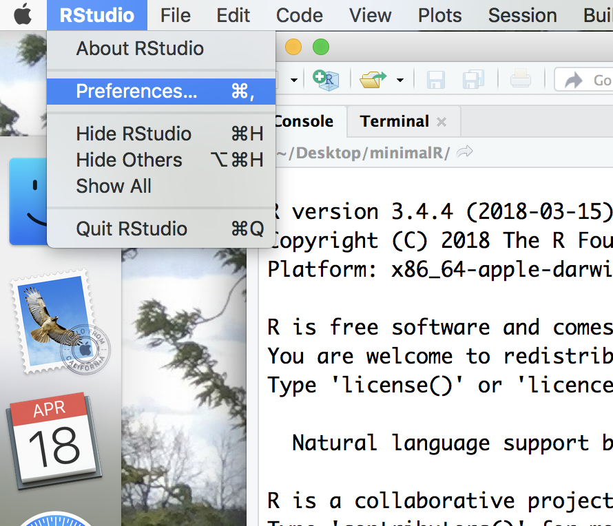
In the first tab, “General”, you should have something like this.
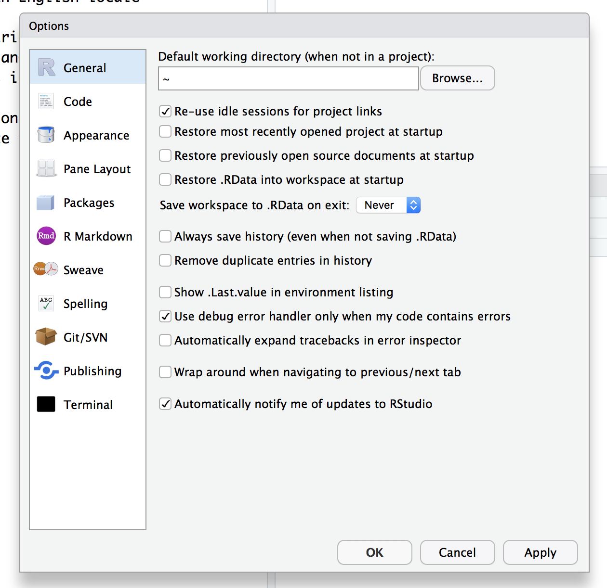
You don’t want any of the boxes to be checked except to be notified of RStudio updates, these are especially problematic:
Once you’ve got everything checked/unchecked the way you want it, go ahead and click “Apply” and then “OK”
On the left side there is a tab for console. This is where we will be entering most of our commands. Go ahead and type 2+2 at the > prompt (don’t type the >, that’s the prompt)
> 2+2
## [1] 4
Now type the following at the prompt (feel free to use your own name)
> my_name <- "Pat Schloss"
Now look in the upper right panel. In the “Environment” tab you’ll see that there’s a new variable - my_name and the value you just assigned it. We’ll talk more about variables later, but for now, know that you can see the variables you’ve defined in this pane.
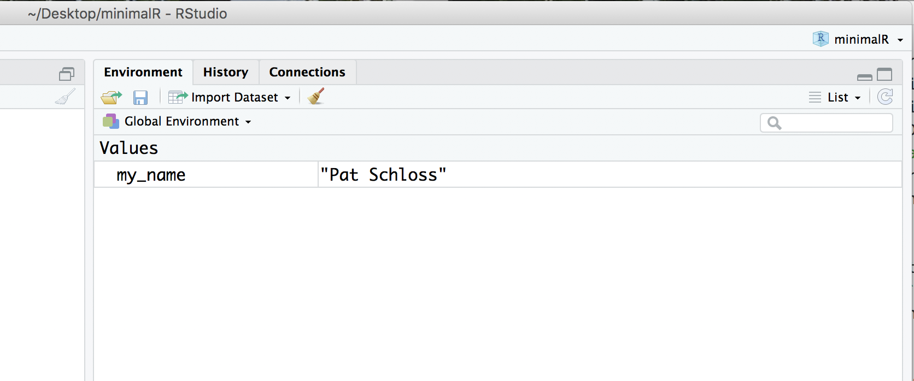
Go ahead and click on the “History” tab. There you’ll see the last two commands we’ve entered.
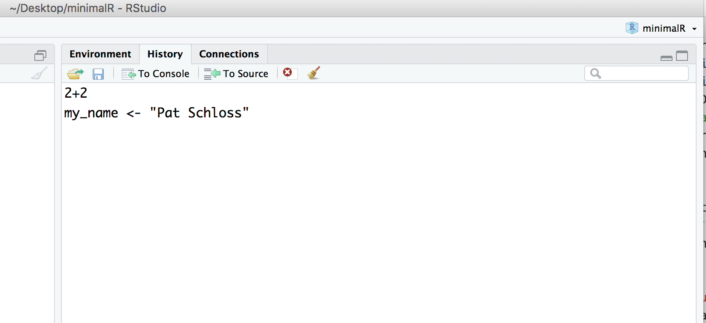
There’s a lot of functionality built into R. The beauty of it being an open source resource is that anyone can add to it to expand it’s functionality or to improve how you work with the existing functionality. This is done through packages. Some day, you might make your own package! We will use several R packages throughout our Code Clubs. The one we’ll use the most is called tidyverse. We’ll be talking a lot about this package as we go along. But for now, we need to install this package. In the lower right panel of RStudio, select the “Package” tab. You’ll get something that looks like this:
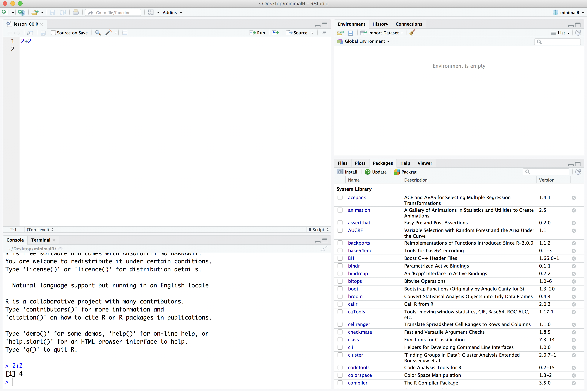
In the search window, type in “tidyverse” (without the quotes). If it isn’t already installed, you won’t see it. If it is installed, it will be listed. The package isn’t installed on my computer.
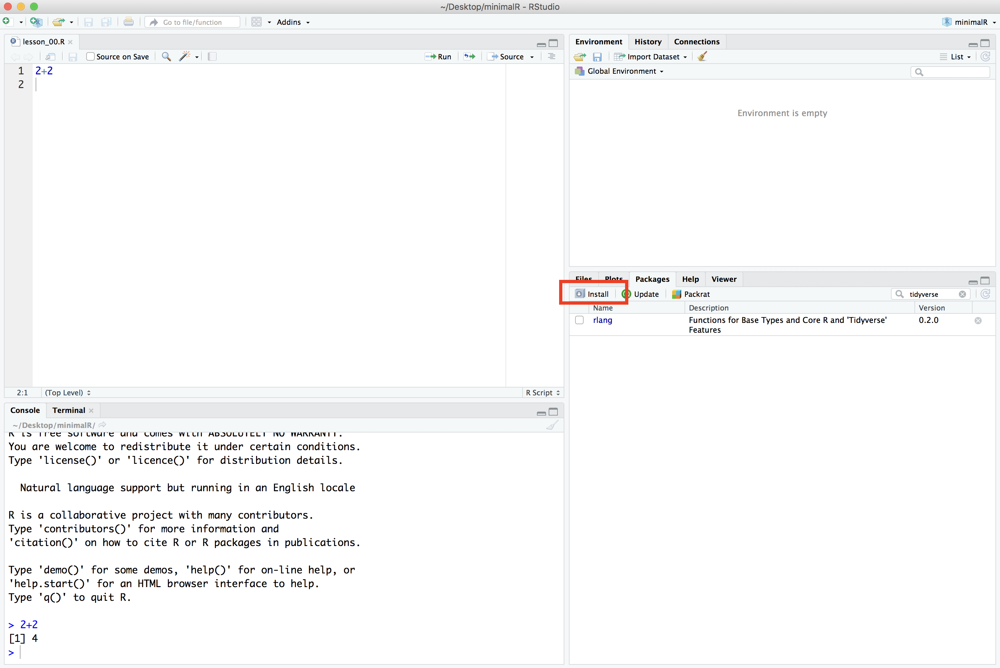
If it isn’t installed on your computer either, go ahead and click the Install button and type “tidyverse” into the “Packages” window:
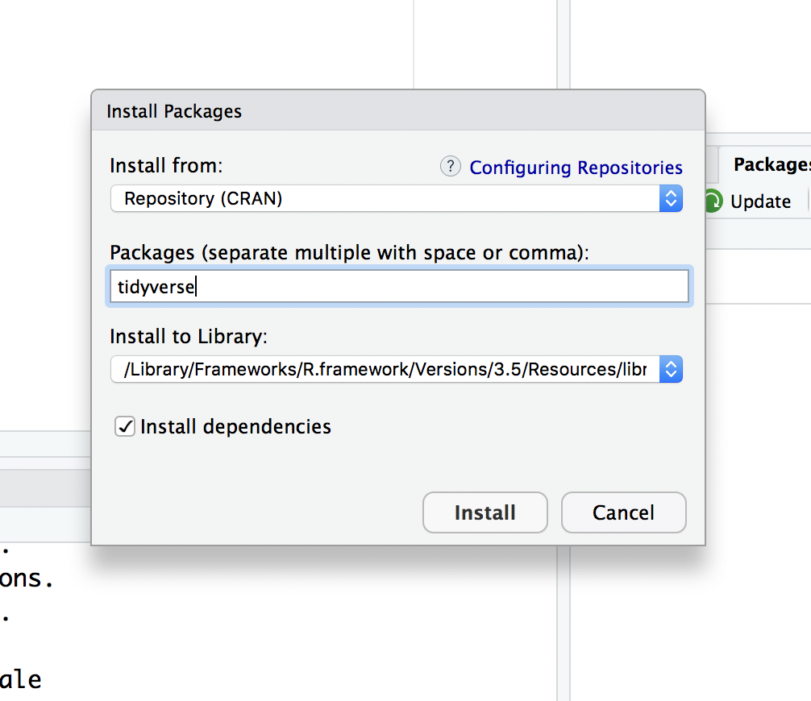
Once you press the “Install” button, the dialog will close and RStudio will install the package. You’ll notice a couple things have happened. In the Packages tab in the lower right panel, you now see the “tidyverse” package is there. You’ll also notice that in the lower left corner that R ran the command install.packages("tidyverse").
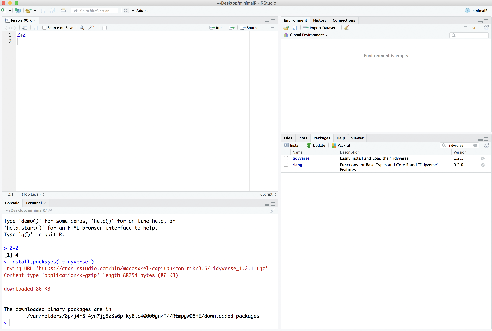
Finally, to make all of the tidyverse goodness available as we go through the tutorials, you can either click the small square next to “tidyverse” in the “Packages” tab or you can run library(tidyverse) in the console tab in the lower left panel of RStudio.
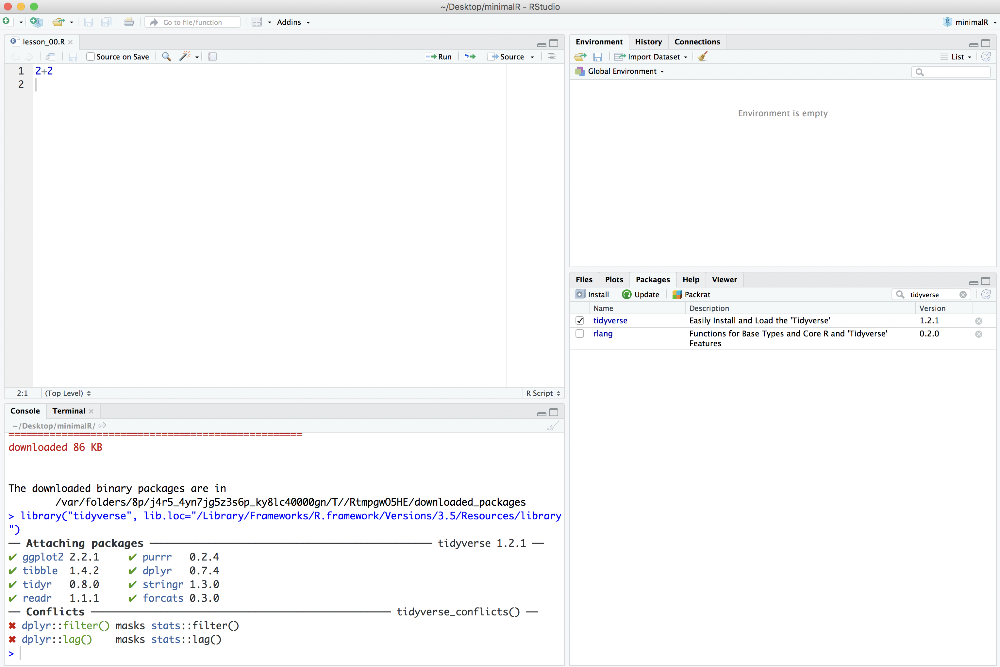
We’ll quickly get to a point where we don’t want to retype multiple lines of code over and over. We can create R scripts that hold lines of code that R Studio will run for us. We can open a new R script by choosing the File menu, then the New File menu, and finally the R Script option. Alternatively, you could click on the icon that contains a white page with a green plus sign on it. I’ve put a red circle around it in the screen shot below
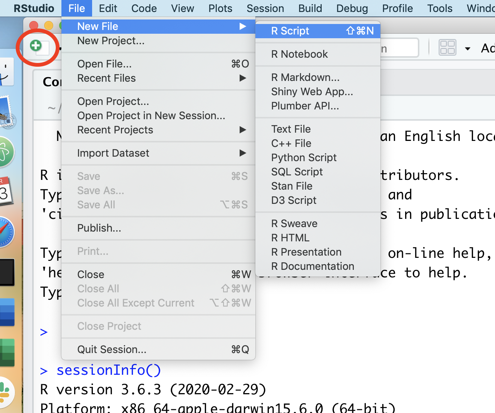
Once you select “R script”, a new panel will open in RStudio.
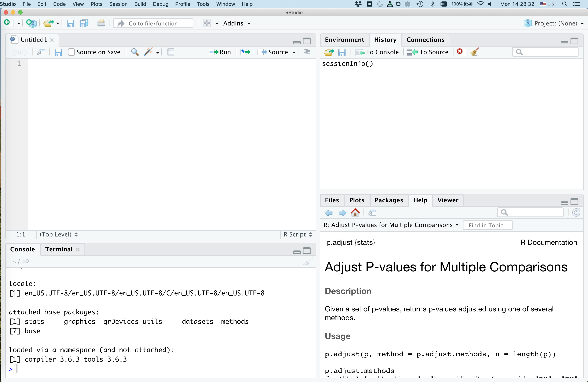
That upper right panel is where you can type in code. Go ahead and copy and paste the following code into your new R script
library(tidyverse)
read_csv("https://raw.githubusercontent.com/fivethirtyeight/data/master/comma-survey/comma-survey.csv") %>%
rename(data=`How would you write the following sentence?`) %>%
mutate(data=recode(data,
`Some experts say it's important to drink milk, but the data are inconclusive.` = "Plural",
`Some experts say it's important to drink milk, but the data is inconclusive.` = "Singular")
) %>%
count(data) %>%
drop_na() %>%
mutate(percentage = 100 * n/sum(n)) %>%
ggplot(aes(x=data, y=percentage, fill=data)) +
geom_col(show.legend=FALSE) +
labs(x=NULL,
y="Percentage of respondents",
title="Is the word 'data' plural or singular?") +
theme_classic()
Go ahead and save this as test_script.R. You should have something like this
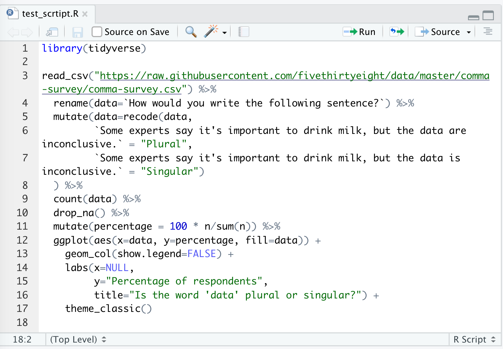
There are several ways to run this script. You could copy and paste all the code to the console window below. An easier way would be to click Source, and Source again. There are a few other ways to run the code in the script in your console, but this will serve us well for now…
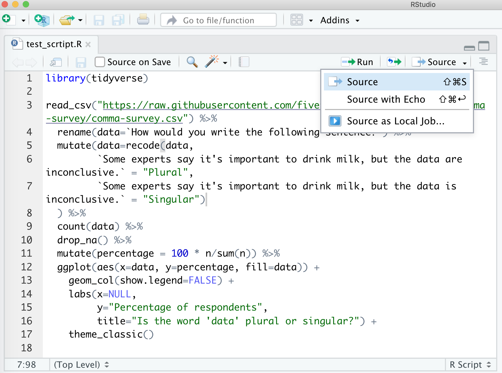
This will run your code in the console window below and will pop out your plot in the lower right corner. Viola! If everything is set up correctly, you should have a plot that looks like mine.
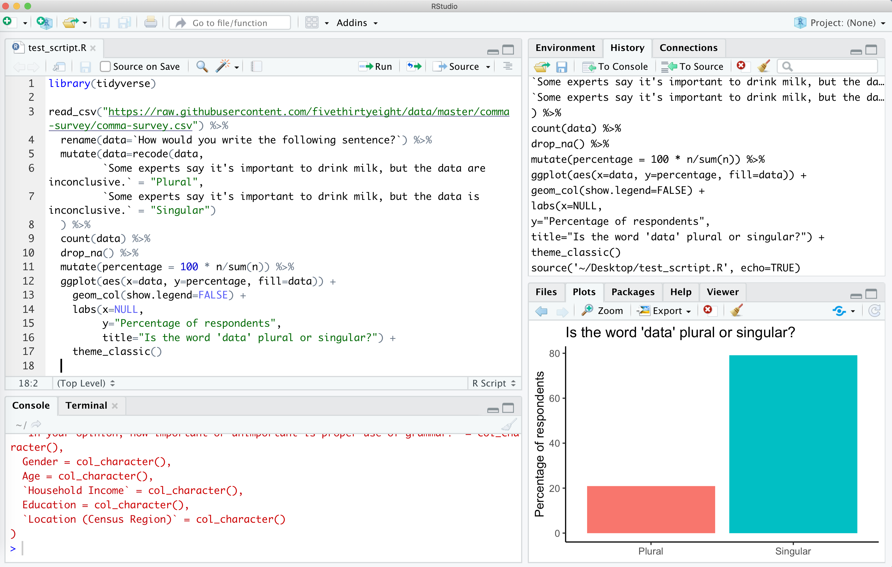
If you don’t get this, make sure you installed the tidyverse package as described above and then make sure you copy and pasted everything from the code block above into a clean R script file.
If you run sessionInfo at the console, you will see the version of R and the packages you have installed and attached (more about what this all means later). Here’s what mine looks like.
> sessionInfo()
R version 3.6.3 (2020-02-29)
Platform: x86_64-apple-darwin15.6.0 (64-bit)
Running under: macOS Mojave 10.14.6
Matrix products: default
BLAS: /System/Library/Frameworks/Accelerate.framework/Versions/A/Frameworks/vecLib.framework/Versions/A/libBLAS.dylib
LAPACK: /Library/Frameworks/R.framework/Versions/3.6/Resources/lib/libRlapack.dylib
locale:
[1] en_US.UTF-8/en_US.UTF-8/en_US.UTF-8/C/en_US.UTF-8/en_US.UTF-8
attached base packages:
[1] stats graphics grDevices utils datasets methods
[7] base
loaded via a namespace (and not attached):
[1] compiler_3.6.3 tools_3.6.3